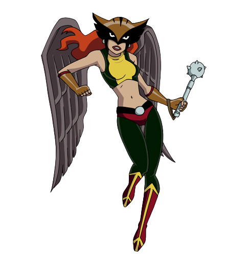

Hawkgirl aka Shayera is the reincarnated spirit of Chay-Ara. Born on Thanagar, she gained the rank of lieutenant in her world and was subsequently sent to Earth on a mission, but during her stay, she grew to love Earth and care for its inhabitants, eventually becoming known to the people as the superheroine Hawkgirl.
